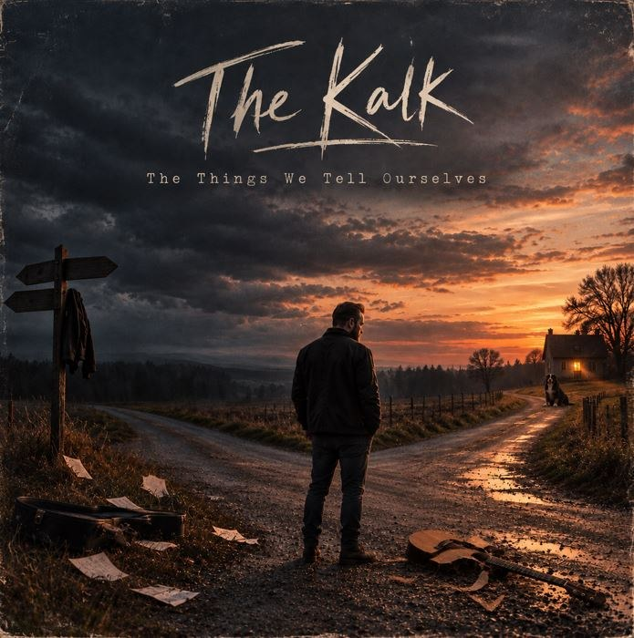

The Kalk
Songs from the things we carry.
Personal stories. Unresolved questions.
The Kalk is a German solo artist blending alternative rock, acoustic guitars and deeply personal songwriting.
His music explores loss, regret, self-doubt and the difficult choices that shape our lives. Rather than offering easy answers, his songs reflect on the things we tell ourselves, the memories we carry and the possibility of finding a different path.
With his debut album, The Things We Tell Ourselves, The Kalk brings these themes together in a collection of songs about looking back, letting go and finding the courage to move forward.
Personal, melancholic and sometimes painfully honest, his music is less about having everything figured out than learning to live with the things that remain unresolved.
Listen on YouTube

The Things We Tell Ourselves
Available on YouTube. Listen to the complete album or explore its songs individually.